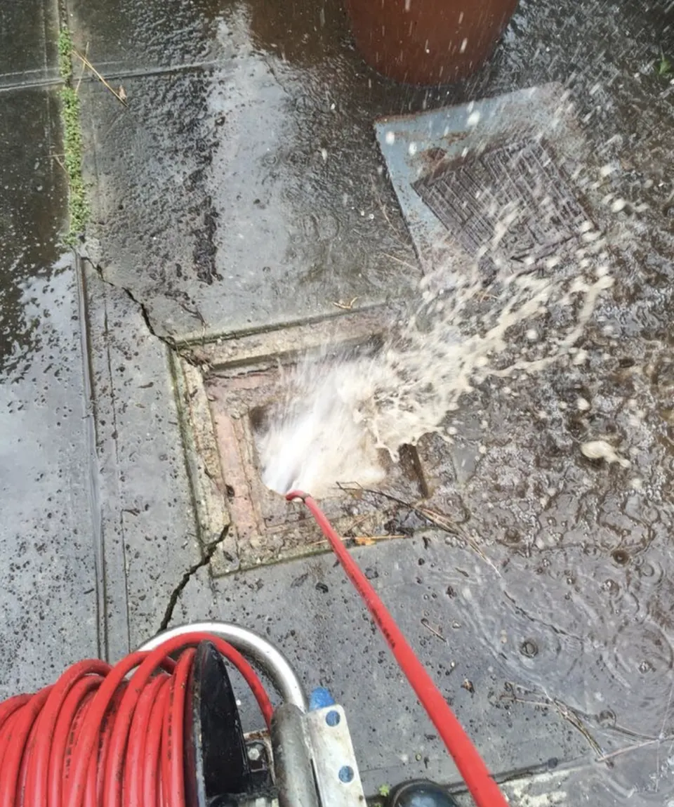
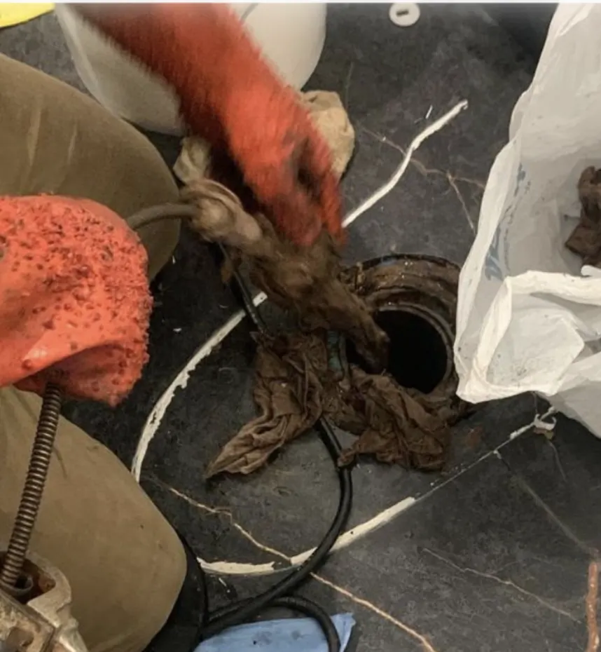
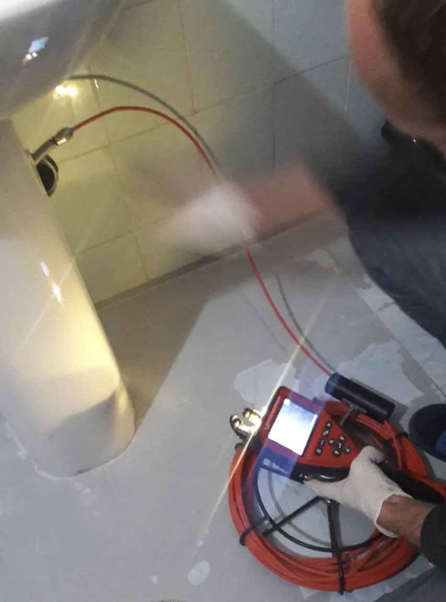
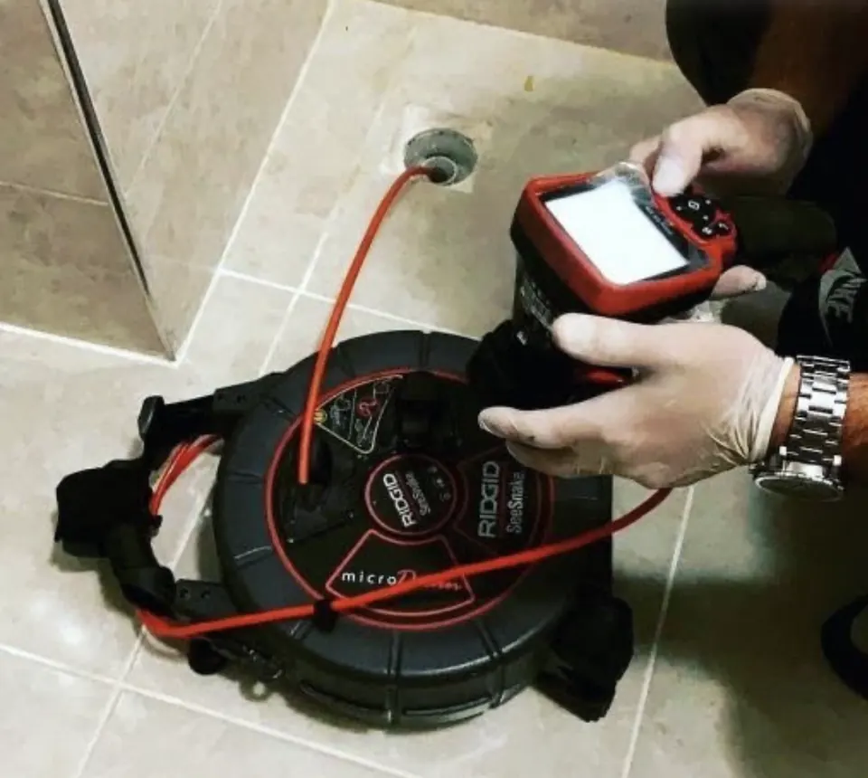

Kocaeli · 7 ilçe · 7/24
Kocaeli Rögar Temizleme ve Rögar Açma
Taşan rögarı açıyor, rögarı ve bahçe hattını yüksek basınçlı suyla yıkayıp tortudan arındırıyoruz. Kocaeli'de 7/24 hizmet veriyoruz; ekiplerimiz adrese ortalama 30 dakikada ulaşıyor, ödemeyi iş bitince alıyoruz.

- 7/24 hizmetGece, hafta sonu ve bayramda da arayabilirsiniz.
- Ortalama 30 dakikaKocaeli'de adrese ortalama 30 dakikada ulaşıyoruz.
- Kırmadan, kameralıTıkanıklığın yerini kamerayla görüp kırmadan açıyoruz.
- Ödeme iş bitinceSorun giderilmeden ücret almıyoruz; fiyatı işe başlamadan söylüyoruz.
Kocaeli rögar temizleme servisine nasıl ulaşırsınız?
Bize 0535 815 18 04 numarasından 7/24 ulaşabilir ya da WhatsApp'tan yazabilirsiniz. Ofisimiz Başiskele'de: Kılıçarslan Mah. Hürriyet Cad. No:1, Başiskele / Kocaeli. Ekiplerimiz Kocaeli'nin 7 ilçesine ortalama 30 dakikada ulaşıyor.
Tavsiyemiz: Rögar kapağını açtıysanız çevresini işaretleyin, içine eğilmeyin; kapalı rögarda zehirli gaz birikebilir.
Rögar neden tıkanır ve taşar?
Rögar bir gecede dolmaz; dibinde biriken her katman hattı biraz daha ağırlaştırır. Taşmaya başladıysa çoğu zaman aylardır biriken bir sorun vardır.
Ağaç kökü
Bahçe hattındaki ek yerlerinden içeri giren kökler boru içinde ağ gibi büyür ve rögarı sürekli doldurur.
Çamur ve kum
Eğimi az olan hatlarda su yavaş akar, taşıdığı kum ve çamur rögar dibine çöker.
Yağ birikimi
Mutfaklardan gelen yağ rögarda soğuyup yüzeyde kalın bir tabaka oluşturur.
Yağmur suyu bağlantısı
Yağmur suyu borusu pis su rögarına bağlıysa sağanakta rögar kapasitesini aşıp taşar.
Çöken ya da kırılan boru
Eski hatlarda boru çökmüşse su yolu daralır; bunu ancak kamera gösterir.
Kırmadan rögar temizleme nasıl yapılır?
Taşan rögarı önce açıp suyun akmasını sağlıyoruz, sonra rögarı ve hattı yüksek basınçlı suyla yıkıyoruz. Kök varsa kesici uçla temizliyoruz. Yıkamadan sonra akışı test ediyor, gerekiyorsa kamerayla çökme ya da kırık olup olmadığına bakıyoruz.
Taşan rögarın açılması
Rögar dolup taşıyorsa önce rögar ile sokak hattı arasındaki tıkanıklığı açıp suyun akmasını sağlıyoruz.
Basınçlı su ile yıkama
Rögar dibinde biriken çamur, kum ve yağ tabakasını yüksek basınçlı suyla söküp hattı yıkıyoruz.
Kök temizliği
Ek yerlerinden içeri giren ağaç köklerini makinenin kesici ucuyla temizliyoruz; kökün nereden girdiğini kamerayla gösteriyoruz.
Bahçe ve bina dışı hat
Bina ile rögar, rögar ile sokak arasındaki dış hatları açıp yıkıyoruz.
Site ve apartman ortak rögarı
Birçok dairenin bağlı olduğu ortak rögarlarda yönetimle birlikte planlı temizlik yapıyoruz.
Yıkama sonrası kontrol
Yıkamadan sonra hattın akışını test ediyor, gerekirse kamerayla çökme ya da kırık olup olmadığına bakıyoruz.
Rögar temizleme: sahadan fotoğraflar



Şeffaf fiyat
Kocaeli rögar temizleme fiyatları ne kadar?
Her tıkanıklık farklı olduğu için telefonda kesin fiyat vermiyoruz; fotoğraf ya da videoyla yaklaşık bilgi verebiliyoruz. Kesin fiyatı usta yerinde gördükten sonra, işe başlamadan söylüyor; onayınız olmadan işe başlamıyoruz. Sorun tamamen giderilmeden ücret talep etmiyor, ödemeyi iş bitince alıyoruz.
Tıkanıklığın yeri
Lavabo sifonundaki tıkanıklık ile bina kolonu ya da bahçe hattındaki tıkanıklık aynı iş değildir.
Tıkanıklığın sebebi
Saç ve sabun birikintisi kısa sürede açılırken yağ, kireç ya da kök daha fazla işlem ister.
Erişim
Temizleme kapağının olup olmaması, klozetin sökülmesi gerekip gerekmediği, rögarın derinliği.
Kamera ve ek işlem
Tekrarlayan tıkanıklıkta kameralı görüntüleme ya da basınçlı suyla yıkama gerekebilir.
Kocaeli 7/24 acil rögar temizleme servisi
Kocaeli genelinde acil rögar temizleme için 7 gün 24 saat açığız. Gece, hafta sonu ya da bayram fark etmez; aradığınızda en yakın ekip yola çıkar ve adresinize ortalama 30 dakikada ulaşır.
Kocaeli acil rögar temizleme servis numarası0535 815 18 04Gece, hafta sonu ve bayram dahilRögar temizleme için belediyeyi ya da i̇su'yu aramalı mısınız?
Kocaeli'de rögar taşıyorsa önce rögarın kime ait olduğuna bakın. Genel kural parsel bacasıdır: binanızın bahçesindeki rögar ve sokağa kadar olan bağlantı hattı mülk sahibinin, sokaktaki ana kanalizasyon hattı İSU'nun sorumluluğundadır. Sokaktaki rögar da doluysa İSU'yu ALO 185'ten arayın; sokak boş, sizin rögarınız doluysa bizi arayın.
| Tıkanıklığın yeri | Kimin sorumluluğunda? | Kimi aramalısınız? |
|---|---|---|
| Evinizdeki lavabo, mutfak, duş ve tuvalet gideri | Mülk sahibi | Özel servis (biz) |
| Bina kolonu, bahçe rögarı, parsel bacasına kadar olan hat | Mülk sahibi / bina yönetimi | Özel servis (biz) |
| Sokaktaki ana kanalizasyon hattı ve sokak rögarı | İSU | ALO 185 (7/24) |
Hangi ilçelerde rögar temizleme hizmeti veriyoruz?
Başiskele Rögar Temizleme ve Rögar Açma
Başiskele'nin bahçeli evlerinde rögar şikâyetinin bir kısmı aslında yağmurla geliyor: yağmur suyu borusu pis su hattıyla aynı rögara bağlıysa sağanakta rögar kapasitesini aşıyor ve taşıyor. Devamını okuyun
Derince Rögar Temizleme ve Rögar Açma
Derince'de rögar çağrısında ilk sorduğumuz soru şu: eviniz kanalizasyona mı bağlı fosseptiğe mi? Kuzeydeki kırsal mahallelerde bazı evler hâlâ fosseptiğe bağlı olabiliyor. Devamını okuyun
Gölcük Rögar Temizleme ve Rögar Açma
Gölcük'ün sahil şeridinde rögar yıkaması diğer ilçelere göre daha sık gereken bir iş. Devamını okuyun
İzmit Rögar Temizleme ve Rögar Açma
İzmit'te rögar çağrıları daha çok eski bahçeli apartmanlardan geliyor. Devamını okuyun
Karamürsel Rögar Temizleme ve Rögar Açma
Karamürsel'deki sitelerde ortak rögar, sezon yoğunluğunda kapasitesinin üstünde çalışıyor. Devamını okuyun
Kartepe Rögar Temizleme ve Rögar Açma
Kartepe'nin villa ve müstakil evlerinde rögar tıkanıklığının iki ana sebebi var: kışın donma ve ağaç kökü. Devamını okuyun
Körfez Rögar Temizleme ve Rögar Açma
Körfez'de ana yola yakın binaların rögarına yol tozu ve kum taşınıyor; rögar dibinde biriken bu tortu hattı ağırlaştırıyor. Devamını okuyun
Hangi durumlarda aramalısınız?
- Bahçedeki ya da bina önündeki rögar taşıyor
- Rögar kapağının çevresinden kötü koku geliyor
- Yağmurdan sonra bodrum ya da zemin kat giderleri geri tepiyor
- Binadaki bütün giderler aynı anda yavaşladı
- Rögar kapağını açınca suyun durgun beklediğini görüyorsunuz
- Bahçede rögara yakın bir noktada sürekli ıslaklık var
Usta gelene kadar ne yapmalısınız?
- Rögar taşıyorsa binada su kullanımını azaltın; çamaşır ve bulaşık makinesini çalıştırmayın.
- Rögar kapağını açtıysanız çevresini işaretleyin; açık rögar özellikle çocuklar için tehlikelidir.
- Rögara içine girerek ya da eğilerek müdahale etmeyin; kapalı rögarda zehirli gaz birikebilir.
- Sokaktaki belediye hattı taşıyorsa bu sizin rögarınızın değil şebekenin sorunudur; İSU'ya haber verin.
Tıkanıklık rehberi
Kendiniz yapmadan önce okuyun
Kocaeli rögar temizleme: sık sorulan sorular
Kocaeli'de rögar temizliği ne kadar sürer?
Rögarın derinliğine ve hattın uzunluğuna göre değişiyor. Tek bir bahçe rögarını açmak ve yıkamak çoğu zaman kısa süren bir iş; site ortak rögarlarında süre uzayabiliyor. Gelince yerinde bakıp süreyi ve fiyatı söylüyoruz.
Rögar ile şehir kanalizasyonu arasındaki hat kime ait?
Parsel içindeki rögar ve bina bağlantı hattı mülk sahibinin sorumluluğundadır; yoldaki ana kanalizasyon ise Kocaeli'de İSU'nun sorumluluğundadır. Taşma sokaktaki ana hattan geliyorsa İSU'yu aramanız gerekir.
Rögar neden sürekli doluyor?
En sık sebepler ek yerlerinden giren ağaç kökleri, dipte biriken çamur ve kum, yağmur suyunun pis su hattına bağlanması ve borunun çökmesidir. Kamerayla bakmadan hangisi olduğunu kesin söylemek zor.
Rögar yıkaması kokuyu keser mi?
Koku rögarda biriken tortudan geliyorsa yıkamadan sonra belirgin şekilde azalır. Koku kapak sızdırmazlığından ya da havalandırmadan geliyorsa ayrıca bakmak gerekir.
Fiyatı ne zaman söylüyorsunuz?
Usta rögarı açıp durumu gördükten sonra, işe başlamadan önce fiyatı söylüyor.
Ücreti ne zaman ödüyorum?
Sorun tamamen giderilmeden ücret talep etmiyoruz; ödemeyi işlem tamamlandıktan sonra alıyoruz. Fiyatı ise usta yerinde gördükten sonra, işe başlamadan söylüyor.
Diğer hizmetlerimiz

Tıkalı Gider Açma
Lavabo, evye, duş, küvet ve balkon giderlerindeki tıkanıklığı kırmadan, makineyle açıyoruz.Ayrıntılar
Tuvalet Tıkanıklığı Açma
Klozet, alaturka tuvalet ve tuvalet hattındaki tıkanıklığı kırmadan, klozeti sökmeden açıyoruz.Ayrıntılar
Kameralı Görüntüleme
Gider hattının içine kamera sokup tıkanıklığın yerini, sebebini ve borunun durumunu kırmadan görüyoruz.AyrıntılarŞu an hizmet veriyoruz · 7/24
Rögar Temizleme ve Açma için hemen ulaşın
7/24 arayabilir ya da WhatsApp'tan yazabilirsiniz.
7/24 arayın0535 815 18 04- Ortalama 30 dakikada adreste
- Fiyat işe başlamadan söylenir
- Kırmadan, gerekirse kameralı